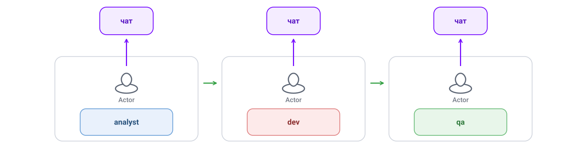
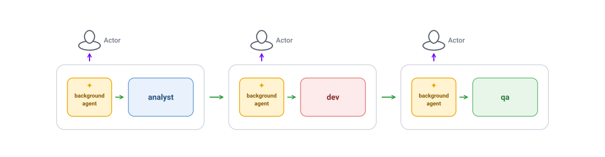
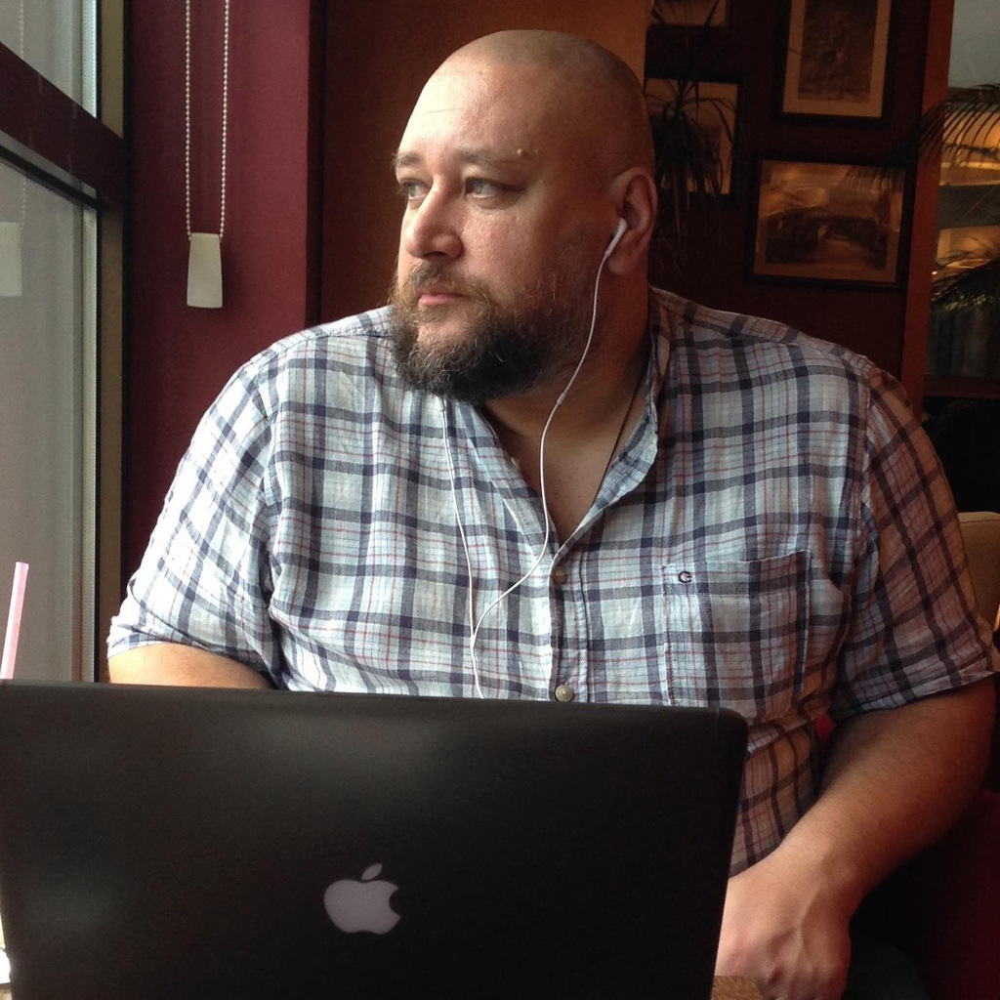
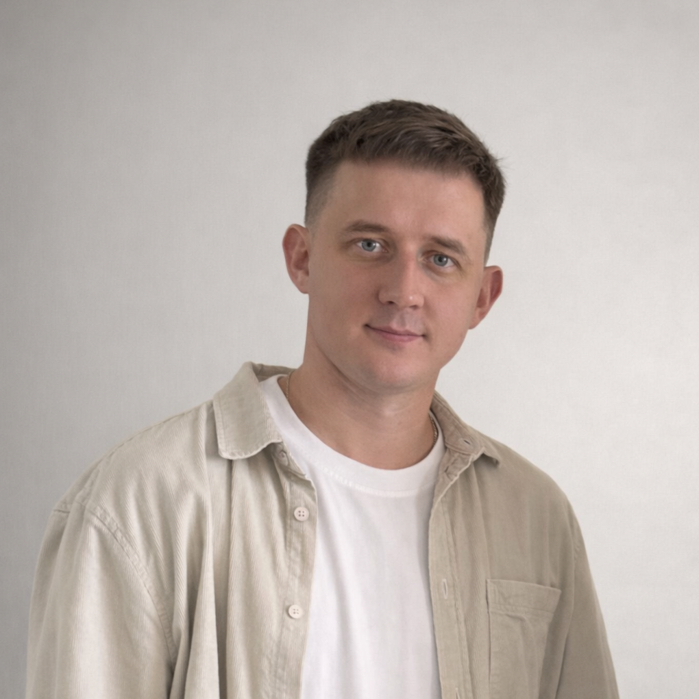
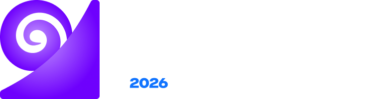

0 уровень: классический процесс без AI

Поддубный Иван
CTO Вебпрактик
Как понять, где ты — и куда двигаться?
*Фокус на бизнес-трансформации
| Ур. | Название | Описание |
|---|---|---|
| L0 | Без AI | Инженеры пишут код самостоятельно, AI не используется |
| L1 | Точечное использование | Личная инициатива. AI локально, в кодовой базе не отражается |
| L2 | Систематизированное | Командный уровень. Промпты и правила версионируются |
| L3 | Агентная поддержка | AI выполняет задачи. Скрипты и агенты в репозитории |
| L4 | Оркестрированная агентность | AI управляет процессом. Пайплайны из нескольких AI |


Локальные агенты — Claude Code, Codex

Background-агенты, облачный runtime


Last Responsible Moment — M. & T. Poppendieck, «Lean Software Development» (2003); ср. M. Fowler про обратимость архитектурных решений
| Практика | 2 уровень локальный агент |
3 уровень облачный runtime |
|---|---|---|
| Сквозной SDD | ? | ? |
| Quality gates перед merge | ? | ? |
| Observability трейсов | ? | ? |
| Sandbox: эфемерные окружения + изоляция | ? | ? |
| Action Policy / HITL | ? | ? |
| Evals: автотесты агентов | ? | ? |
| Resource & cost limits | ? | ? |
| Multi-agent coordination | ? | ? |
| Модельно-независимый harness | ? | ? |
| AI Gateway (LLM-прокси) | ? | ? |
| Агент с выходом на L3 | ? | ? |
| Agent-first IDP (платформа) | ? | ? |




Поднимаем — эфемерное окружение:
Ограничиваем — изоляция:
Два агента, работающие в одном репо параллельно, должны видеть друг друга (lock на ветку/задачу), иначе будут гонки и переписывание чужих изменений.
| Практика | 2 уровень локальный агент |
3 уровень облачный runtime |
|---|---|---|
| Сквозной SDD | фундамент | фундамент |
| Quality gates перед merge | усиливает | обязательно |
| Observability трейсов | усиливает | обязательно |
| Sandbox: эфемерные окружения + изоляция | усиливает | обязательно |
| Action Policy / HITL | ручной HITL | обязательно |
| Evals: автотесты агентов | усиливает | критично |
| Resource & cost limits | собирать данные | обязательно |
| Multi-agent coordination | — | обязательно |
| Модельно-независимый harness | желательно | критично |
| AI Gateway (LLM-прокси) | усиливает | обязательно |
| Агент с выходом на L3 | — | обязательно |
| Agent-first IDP (платформа) | — | критично |